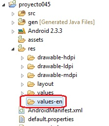
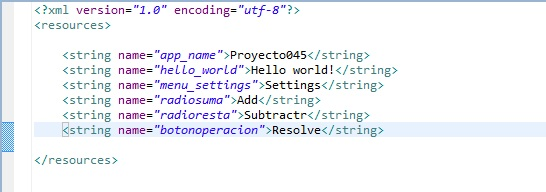
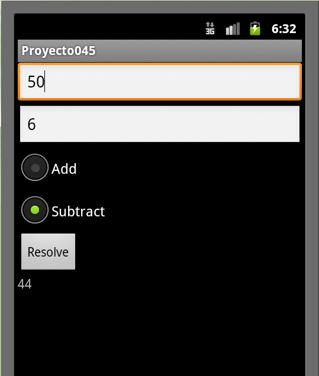

48 - Internacionalización y archivo strings.xmlYa se encuentra disponible el nuevo tutorial para aprender android con el nuevo entorno Android Studio propuesto por Google y que remplaza a Eclipse. |
La internacionalización de un programa en Android se resuelve implementando varios archivos strings.xml (uno por cada idioma que necesitemos implementar)
Modificar el proyecto025 de tal manera que muestre su interfaz en castellano o ingles según la configuración del idioma seleccionado en el dispositivo.
Crearemos primero una nueva carpeta llamada values-en (las abreviaturas para los distintos lenguajes los podemos ver en la página ISO 639-1 Code (segunda columna)
Es decir creamos otra carpeta con el mismo nombre (values) más un guión y la extensión del lenguaje a implementar:
Seleccionamos el archivo strings.xml de la carpeta values presionamos el botón derecho y elegimos copiar, ahora nos vamos a la otra carpeta (values-en) y elegimos copiar. Procedemos a traducir los valores almacenados en cada string:
Solamente con esto ya tenemos nuestra aplicación funcionando en dos idiomas. Para probar debemos acceder al emulador de Android y configurarlo en inglés (tecla home -> tecla menu -> configuración > Idioma y teclado > Seleccionar idioma -> "English (United Stated)
Luego de esto lanzamos la aplicación y deberemos ver la interfaz con los string que configuramos en el archivo strings.xml de la carpeta values-en:
